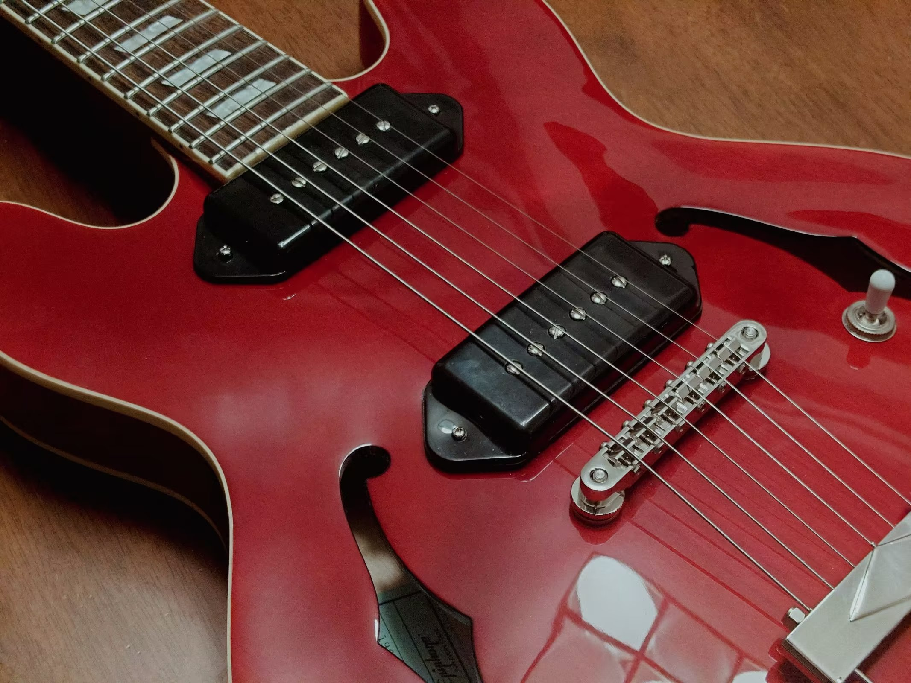

History of Electric Guitar

The electric guitar, an iconic instrument in modern music, traces its origins back to the early 20th century. The quest to amplify the guitar began in the 1920s, when musicians sought a way to be heard over the louder brass and woodwind instruments in big bands. Early attempts involved attaching a resonator to the guitar to increase its volume. However, these efforts fell short of providing the necessary amplification. The breakthrough came in the 1930s when George Beauchamp, an employee of the National String Instrument Corporation, collaborated with Adolph Rickenbacker to develop the first commercially successful electric guitar. This prototype, known as the "Frying Pan" due to its circular body and long neck, used a magnetic pickup to convert string vibrations into electrical signals, which could then be amplified through a speaker.
Some Guitar Masters
Jimi Hendrix
Jimmy Page
Eric Clapton
Jimi Hendrix, born Johnny Allen Hendrix on November 27, 1942, in Seattle, Washington, is widely regarded as one of the most influential electric guitarists in the history of popular music. Hendrix's innovative style of playing, characterized by his use of feedback, distortion, and an extensive vocabulary of guitar techniques, revolutionized the rock genre.
Jimmy Page, born January 9, 1944, in Heston, England, is a legendary guitarist best known as the founder and lead guitarist of the rock band Led Zeppelin. Renowned for his innovative guitar techniques and iconic riffs, Page has profoundly influenced rock music and is celebrated as one of the greatest guitarists of all time.
Eric Clapton, born March 30, 1945, in Ripley, England, is a legendary guitarist and singer-songwriter known for his work with bands like The Yardbirds, Cream, and his solo career. Nicknamed "Slowhand," Clapton's blues-influenced playing and soulful voice have made him one of the most influential and celebrated musicians in rock history.
I and My Guitars


To be honest, I'm not a good guitar player...